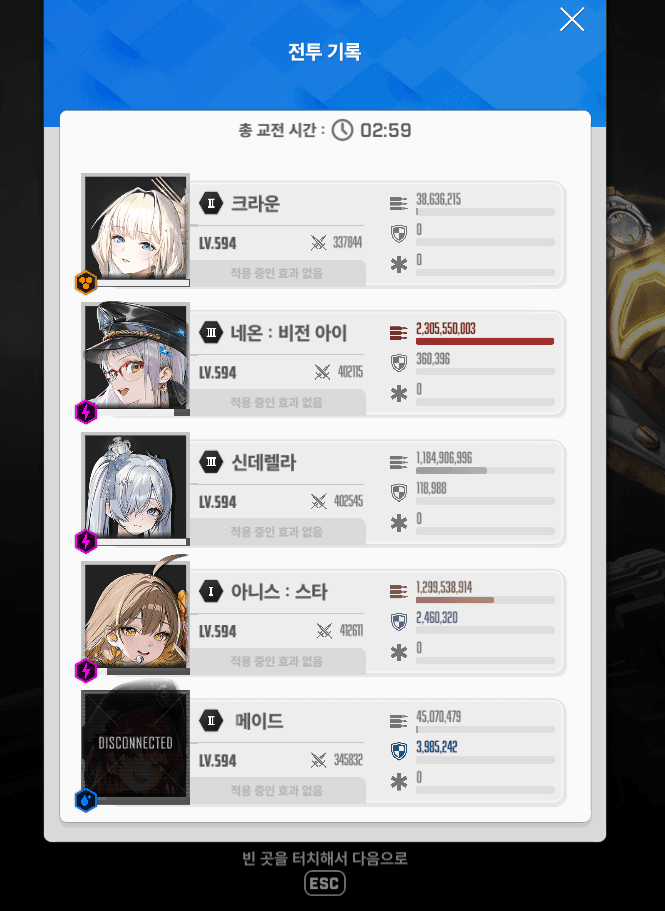
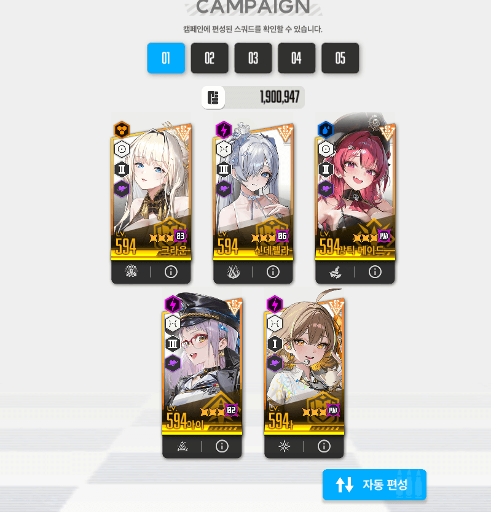

앨트루이아보다 쉬운 태보와 약간의 버스트 컨트롤을 요하는 보스입니다
(쉬운난이도랑 별개로 엄청나게 잘 설계된 보스라 생각해서 꽤 재밌게 했음)
1. 3번자리는 반드시 신데렐라를 배치해야함
디코이로 단일 패턴을 넘길수있어서 3번은 반드시 선데
2. 에고비스타는 날아갔던 방향에서 다시 출현함
왼쪽으로 날아갔으면 왼쪽에서
오른쪽으로 날아갔으면 오른쪽에서
미리 에임 가져다대기
3. 일섬이 2번 나오는데
첫번째 일섬은 1타, 크라운실드로 막고
두번째 일섬은 3타, 크라운실드와 엄폐물로 막기 ->>> 이거때문에 엄폐물체력을 반드시 아껴야함
1) 아메네
딜하기
2) 아크선
아메네 이후 미사일 2번 태보 후 아크선
여기서 주의점은
2번째 미사일이 모두 날아온 이후에 아크선을 켜야함
너무 빨리키면 크라운실드가 깨져서 이후 일섬에서 엄폐물체력이 까임
3) 아메네
극딜
여기서 에고비스타가 틱딜을 쏘는데 엄폐하면안됨
엄폐물체력을 보존하기 위해 몸으로 맞아줘야함
4) 아크선
에고비스타 내려오는 타이밍에 맞춰서 버스트를 써주는데
이때 크라운장탄컨트롤로 무적스택을 준비해둠
이후 미사일 2번쏠때 크라운으로 어그로해줘야함
왜냐하면 미사일이 선데나 4번쪽으로 갈경우
선데랑 4번 사이에 있는 디코이가 부서짐 >> 이후 푹찍 도트딜에 선데 끔살
5) 아메네
크라운 태보하면서 딜
6) 아크 선
저지 들어가기전 아크는 먼저 써서 딜넣다가
에고비스타가 순간이동하고 나타난 타이밍에 선데 버스트를 눌러주면됨
그러면 저지까지 딱 버스트 가능
7) 아크네
저지 이후 바로 버스트를 키는거보다
파츠 생성타이밍에 맞춰서 네온 버스트를 켜주는게 딜이 더 잘나옴
적당히 네온 차징해주다가 극딜
8) 아메선
+ 미사일 태보
이 다음패턴이 3타 일섬패턴이라 미리 메스트 2스택을 써줘야함
9) 아크네
타이밍 맞춰서 엄폐해주면되는데
1..2!!!! ...... 3
이렇게 때리기 때문에
크라운실드까지 버티고 엄폐해야지~ 하지말고
넉넉하게 엄폐하는걸 추천
10) 아크선
11) 아메네
저지 > 시간이 부족하지도 않지만 넉넉치도 않고 파츠도 계속 있기때문에
빠르게 저지 해주면됨
12) 아크선
13) 아크네
딜 넣으면서 마무리